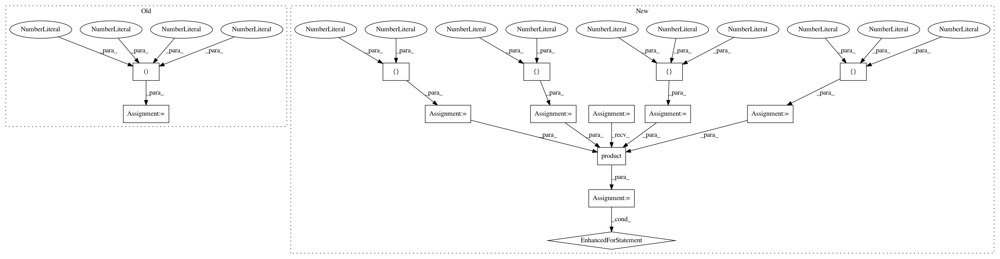

aa1074dc1704d3732ab205c43d48083ef8c69680,tests/python/unittest/test_operator.py,,test_rnnrelu_bidirectional,#,245
Before Change
@with_seed()
@assert_raises_cudnn_not_satisfied(min_version="5.1.10")
def test_rnnrelu_bidirectional():
T, N, I, H = 5, 20, 200, 200
fused = mx.rnn.FusedRNNCell(H, num_layers=2, mode="rnn_relu",
bidirectional=True, get_next_state=True, prefix="")
After Change
@with_seed()
@assert_raises_cudnn_not_satisfied(min_version="5.1.10")
def test_rnnrelu_bidirectional():
Ts = [1, 5]
Ns = [1, 32]
Is = [32, 128, 512]
Hs = [32, 128, 512]
for T, N, I, H in itertools.product(Ts, Ns, Is, Hs):
fused = mx.rnn.FusedRNNCell(H, num_layers=2, mode="rnn_relu",
bidirectional=True, get_next_state=True, prefix="")
stack = mx.rnn.SequentialRNNCell()
stack.add(mx.rnn.BidirectionalCell(
mx.rnn.RNNCell(H, activation="relu", prefix="l0_"),
mx.rnn.RNNCell(H, activation="relu", prefix="r0_"),
output_prefix="bi_rnnrelu_0_"))
stack.add(mx.rnn.BidirectionalCell(
mx.rnn.RNNCell(H, activation="relu", prefix="l1_"),
mx.rnn.RNNCell(H, activation="relu", prefix="r1_"),
output_prefix="bi_rnnrelu_1_"))
check_rnn_consistency(fused, stack, T, N, I, H, "write", rtol=1e-2, atol=1e-2)
check_rnn_consistency(fused, stack, T, N, I, H, "add", rtol=1e-2, atol=1e-2)
check_rnn_consistency(fused, stack, T, N, I, H, "null", rtol=1e-2, atol=1e-2)
@with_seed()
def test_lstm_dropout():
X = mx.sym.Variable("x")
Params = mx.sym.Variable("params")
In pattern: SUPERPATTERN
Frequency: 4
Non-data size: 14
Instances
Project Name: apache/incubator-mxnet
Commit Name: aa1074dc1704d3732ab205c43d48083ef8c69680
Time: 2019-10-31
Author: tao.a.lv@intel.com
File Name: tests/python/unittest/test_operator.py
Class Name:
Method Name: test_rnnrelu_bidirectional
Project Name: apache/incubator-mxnet
Commit Name: aa1074dc1704d3732ab205c43d48083ef8c69680
Time: 2019-10-31
Author: tao.a.lv@intel.com
File Name: tests/python/unittest/test_operator.py
Class Name:
Method Name: test_gru_sym
Project Name: apache/incubator-mxnet
Commit Name: aa1074dc1704d3732ab205c43d48083ef8c69680
Time: 2019-10-31
Author: tao.a.lv@intel.com
File Name: tests/python/unittest/test_operator.py
Class Name:
Method Name: test_gru_bidirectional
Project Name: apache/incubator-mxnet
Commit Name: aa1074dc1704d3732ab205c43d48083ef8c69680
Time: 2019-10-31
Author: tao.a.lv@intel.com
File Name: tests/python/unittest/test_operator.py
Class Name:
Method Name: test_lstm_bidirectional